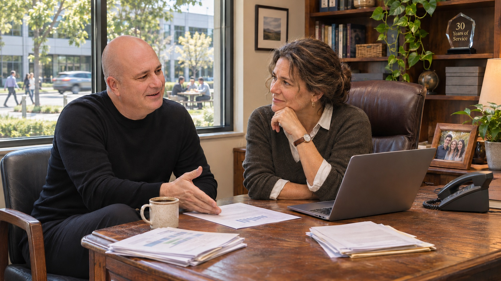

How I work.
A clear understanding of your business, a strategy shaped around your goals and practical help putting it into action.
A diagnostic
comes first.
I begin by understanding your goals, how the company works and what deserves attention. We agree on the scope, timing and fee for the Business Diagnostic before the review begins.
Financial performance
Earnings, cash flow, financial reporting and the strength of your balance sheet.
Customers and growth
Pricing, customer profitability, sales opportunities and the cost of serving customers.
Operations
Capacity, core processes, responsibilities and obstacles to efficient delivery.
People and leadership
Management capability, delegation, compensation and benefits.
Systems and technology
How your systems work together, cybersecurity and practical uses for AI.
From findings to a strategy.
A business assessment
A concise account of the issues and opportunities identified in the review.
Recommended priorities
A short list of practical options, with the likely benefits, investment and risks to consider.
An action plan
Agreed next steps, responsibilities and measures to guide implementation.
Working alongside you
through implementation.

We discuss the findings and agree on a custom strategy. I can then work alongside you and your team to carry it forward, coordinate specialists and review progress.
The work may draw on finance, revenue, operations, leadership or technology expertise, including fractional CFO, CRO or COO support where appropriate.
If a transition or strategic sale is your goal, preparation should reflect the buyer’s interests and the needs of your executives, employees and family. Tax efficiency, compensation, benefits and estate goals are considered early with the appropriate advisers.
Before we begin.
Do I need to be planning a sale?
No. The review can support growth, better performance, a gradual change in your role or continued family ownership.
What do you need from me?
Time to discuss your goals and access to relevant people and business information. We agree on what is needed when we define the scope.
Do you work with my existing advisers?
Yes. I work alongside the advisers you trust and help bring in additional expertise where the plan requires it.
What happens after the review?
We discuss the findings and decide what to implement. Any ongoing work has an agreed scope and responsibilities.